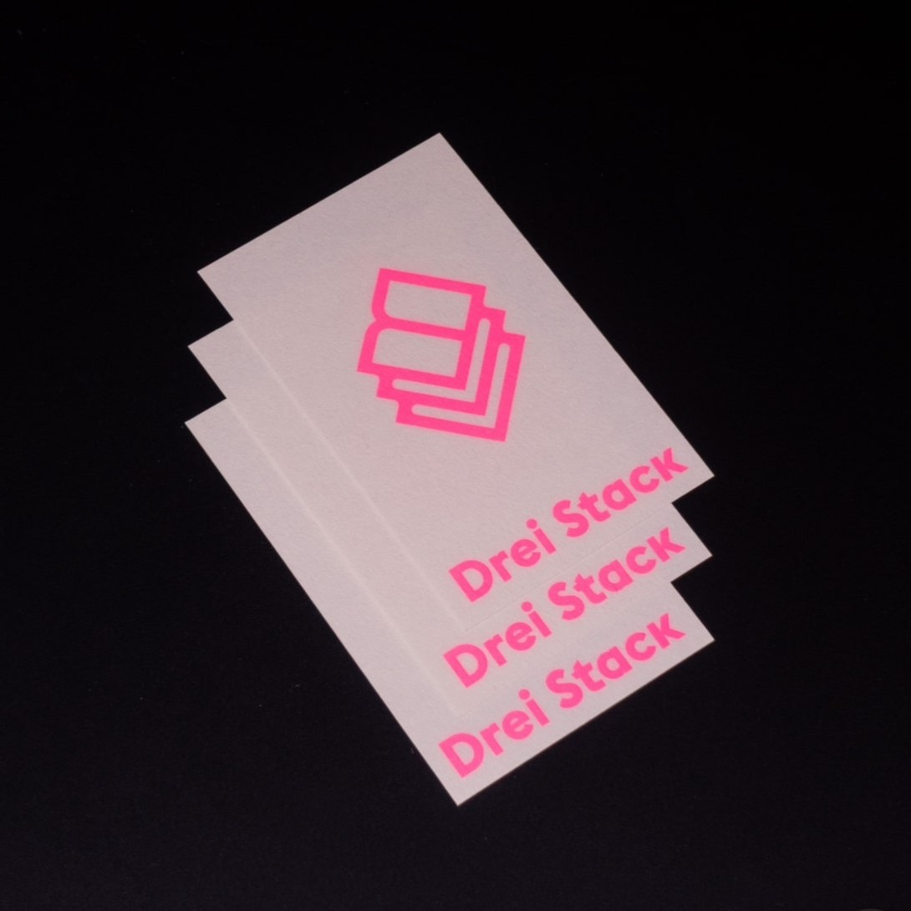

Drei Stack

Drei Stack이라는 온라인 서점을 열었습니다. 소량제작, 형광인쇄를 앞세워 오늘날 출판계에 대안적 영역을 탐색해봅니다.
소개글
기존 출판 시장은 작가들에게 지나치게 높은 진입장벽을 요구합니다. 책을 출판하려면 책의 콘셉트를 기획하는 것 부터, 디자인, 편집, 인쇄, 유통까지의 전 과정에 대한 이해가 있어야 합니다. 게다가 출판사와 계약할 수 있을 만큼의 인지도와 명성을 갖추어야 할 때도 있습니다. 이 모든 과정을 개인이 감당하기에는 지나치게 많은 시간과 비용이 소모되고, 수익성을 보장하기도 어렵습니다.
이에 우리는 기존 출판 시장의 대량 생산 및 유통 방식에서 벗어나 아티스트와의 협업을 중심으로 한 대안적 출판 모델을 제안합니다. 아티스트가 책의 방향을 결정하고 나면, 불필요한 과정을 생략하고 디자인부터 유통까지 Drei Stack이 담당합니다. 모든 책은 필요한 만큼만 제작됩니다.